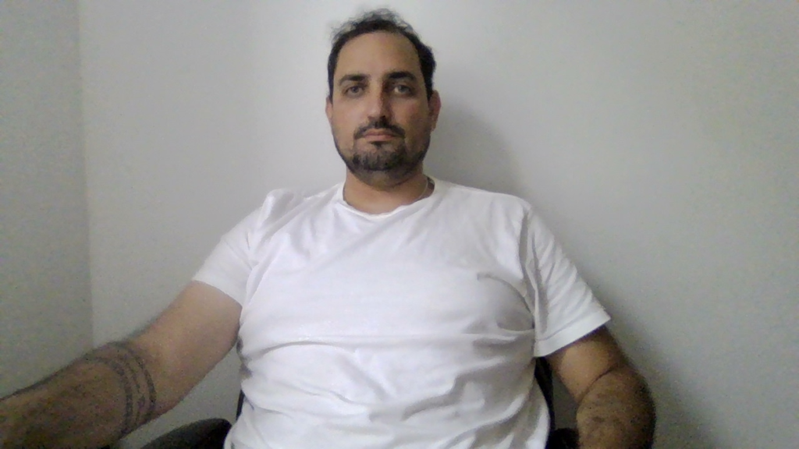
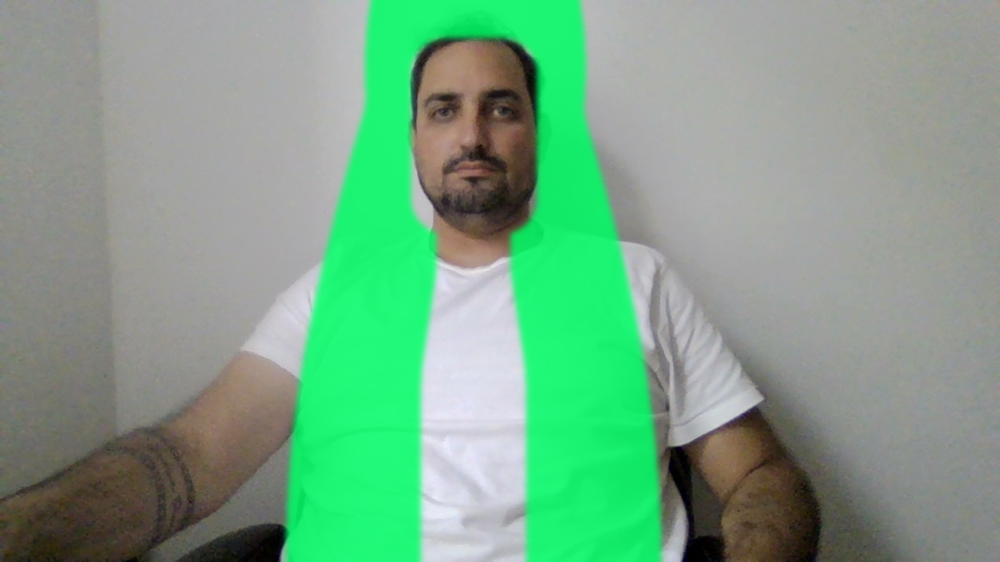
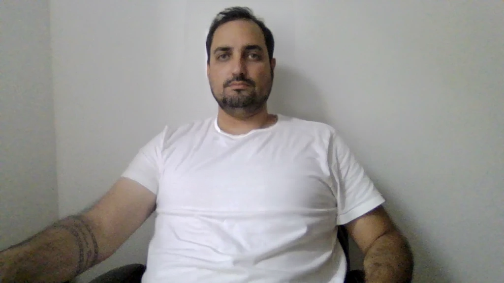
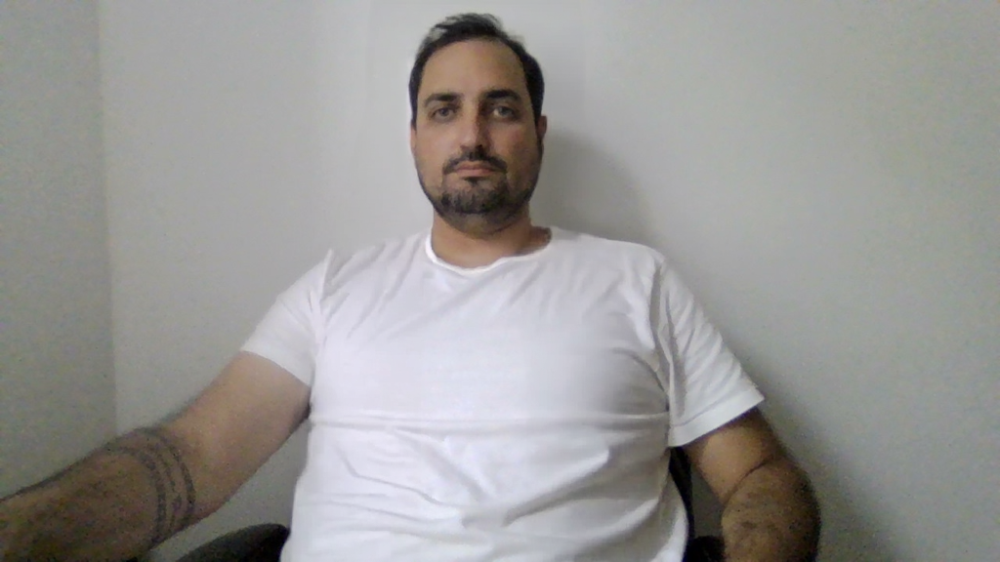

Comprimento: 85 cm | Cor: Loiro Claro | Tipo: Ondulado | modo: Extend | foto: 1024x576 | alvo y=936 | fora do quadro: True
Prompt (guiado): The bright green shape painted on this photo shows exactly where the person's new hair must be. Replace the green shape and the person's current hair with real, natural light blonde with a soft neutral tone hair with soft natural waves, filling exactly the green area: from the top of the head, down both sides of the face, over both shoulders, ending at the lower edge of the green shape. If the green shape reaches the bottom edge of the photo, the hair continues to the bottom edge. No green color may remain anywhere in the image. The hair color is exactly light blonde with a soft neutral tone. The hair must look like real natural human hair, worn loose and down, with no braids, no ponytails, no pigtails, no buns, no bows, no clips and no accessories. Keep the person's face, facial hair, expression, skin, body, clothing, pose, lighting and background exactly identical to the original photo.
Prompt (Fill): light blonde with a soft neutral tone hair with soft natural waves, long natural hair flowing down over the shoulders and chest, one continuous mass of hair covering the whole area, realistic strands and shine. Photograph.
| Modelo | Resultado cru (alinhado) | Resultado final (composto) |
|---|---|---|
| Original e guia (máscara do comprimento pedido) |  |  |
| fill-mascara 9 s fim do cabelo: y=574 100% da altura pixels do rosto alterados: 0 |  |  |